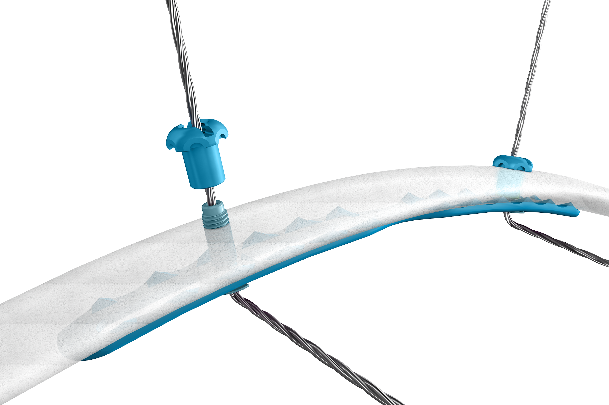
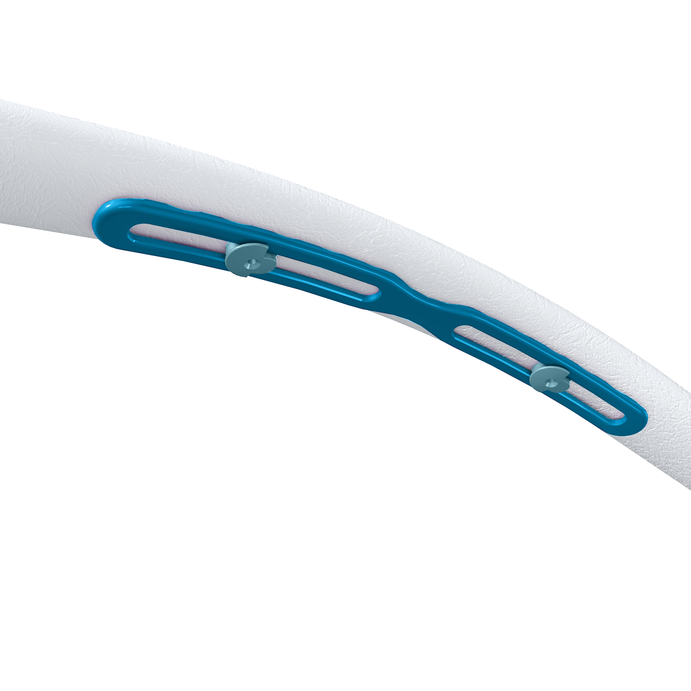
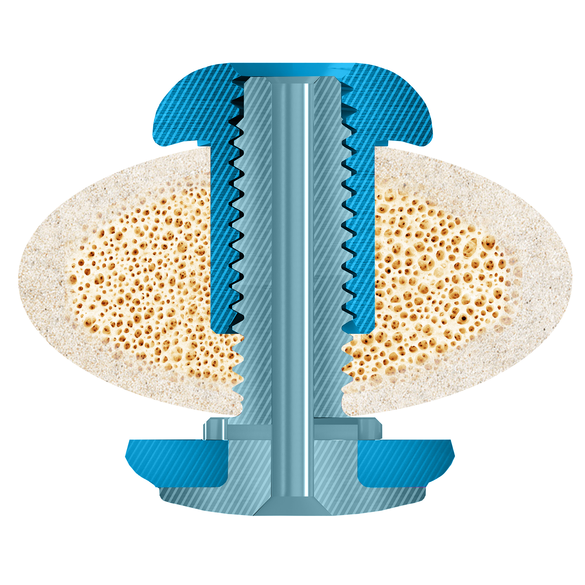
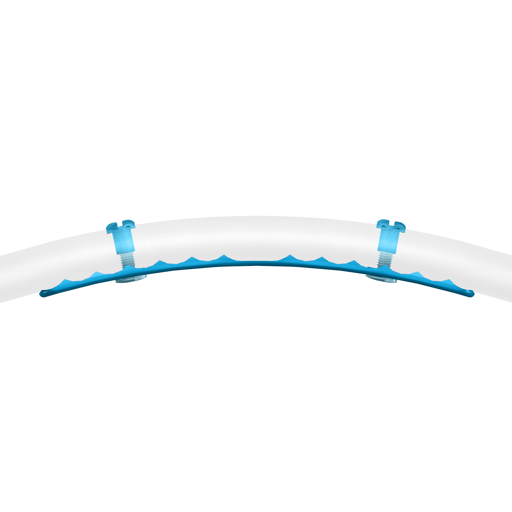

Rib fracture care
elevated
AdvantageRib is a revolutionary system designed to treat rib fractures through a minimally invasive approach

Minimally invasive alternative to traditional rib fixation systems.
Stabilization of the ribs with biomechanical advantages to traditional anterior plating systems.
Anterior and posterior cortical engagement of rib.
FDA cleared for the fixation, stabilization, and fusion of rib fractures and osteotomies of normal and osteoporotic bone.
SIG Medical is an emerging growth medical device company pioneering a minimally invasive rib fixation system that provides a clinical solution optimized for the operating room. Our mission is to provide more immediate and definitive patient care, reducing pneumonia, time in intensive care units, chronic pain, ventilator support, chest wall deformity, need for tracheostomy and significantly reduce the overall cost to the healthcare system.
Ken Kremer
President and CEO
Ken has extensive experience in the Healthcare industry, merging solid, traditional corporate background with emerging growth experience. Ken brings more than 10 years of Executive and Management experience in leading medical device firms. Ken started his career in the Pharmaceutical industry for G. D. Searle and helped market and launch many blockbuster drugs including Ambien. From there, Ken moved into the device world with Mitek/J&J serving in territory management. In 1996, Ken began a career with Synthes where he gained valuable experience in sales, marketing, finance and operational management leading a team to exceed company goals with over $54M in revenue. In 2014, Ken was hired as the Vice President of Sales for Trice Medical, an early stage medical diagnostic company. Ken participated in all aspects of this startup including strategic planning, operational management, marketing, finance, training, and product development. Most recently, Ken took the leadership role at SIG Medical where he serves as the company’s CEO and President. Ken received his B.S. in Business from Rider University. Additionally, he was a 4th round draft pick of the Milwaukee Brewers and played professionally until 1990.
Andrew Davison
VP, Product Development and Marketing
Andrew has spent 12 years in R&D and Commercialization of Medical Devices. For 5+ years at DePuy Synthes, he was a Staff-Level Engineer leading the development and launch of key Craniofacial products. Some of his contributions at DePuy Synthes were leading surgical planning of the most extensive face transplant to date and launch of a platform for patient specific implant design and manufacture. He spent 2 years at Trice Medical, an early stage medical diagnostic company, in both Sales and Product Development roles. Most recently, he led the formation of the Trauma Division at Globus Medical. At Globus he built an entire Product Development team and led the commercialization effort including 10 product FDA approvals, and 6 product launches. He received a B.S. and M.S. in Mechanical Engineering from Penn State and University of Delaware respectively.
Call:
(717) 553-2021
Email:
info@sigmedical.net
Location:
238 East Chocolate Ave
Suite 2
Hershey, PA 17033
March 2018
CWIS Park City, Utah
AAST
September 26th-29th 2018
San Diego, California
Innovations in Chest Wall Surgery
October 19th-20th 2018
Boston, Massachusetts
Clinical Congress 2018
October 21st-25th 2018
Boston, Massachusetts
Call:
(717) 553-2021
Email:
info@sigmedical.net
Location:
238 East Chocolate Ave
Suite 2
Hershey, PA 17033